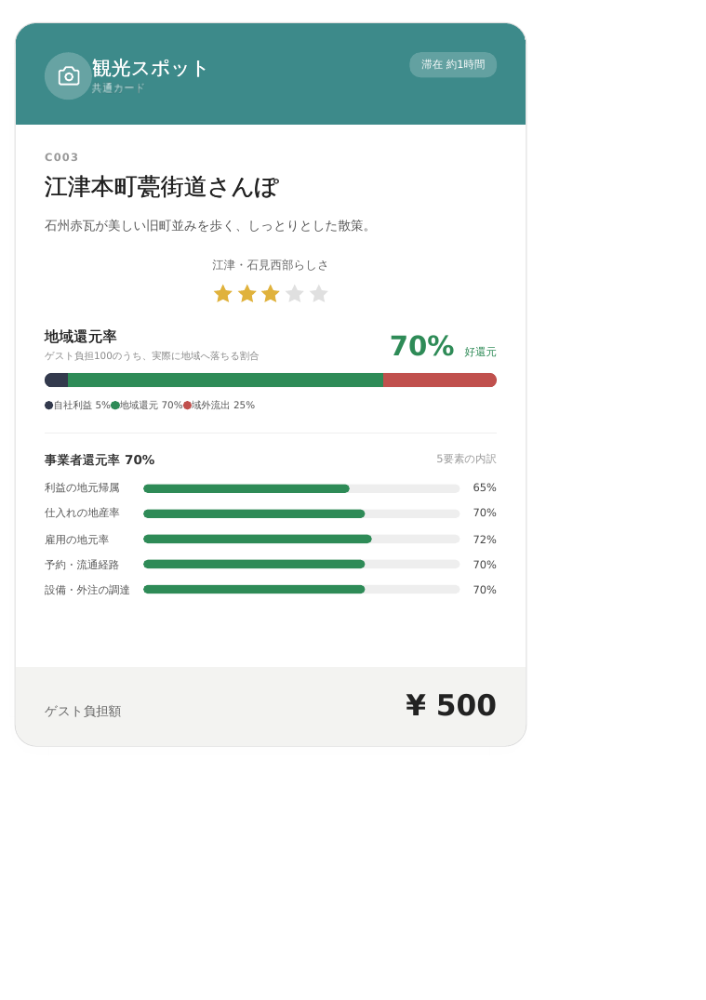
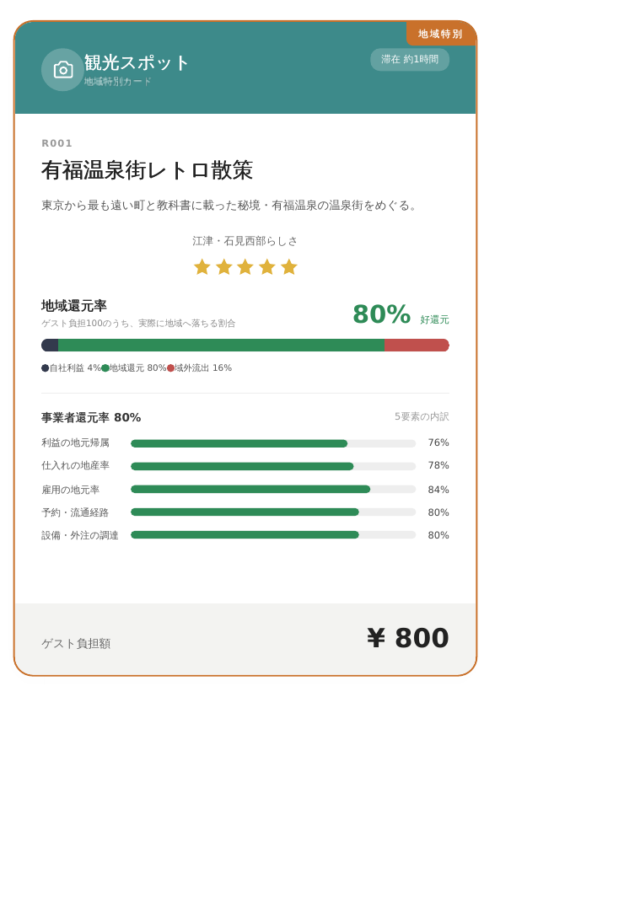
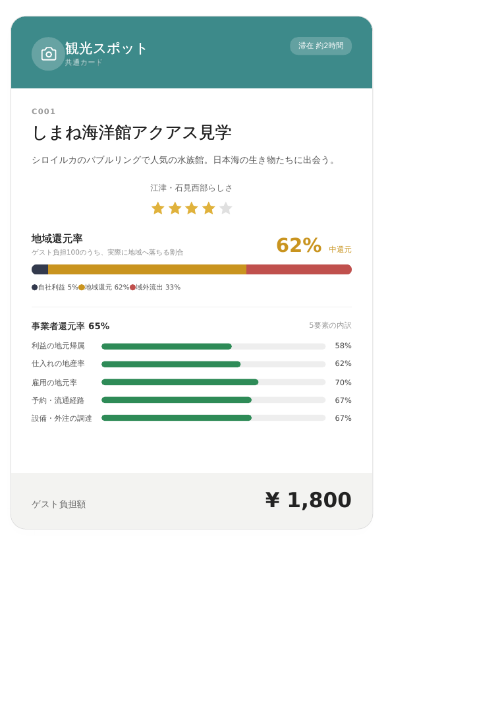

観光カードから日帰りコースを作る
カードを選ぶ。コースができる。体験レビューがたまる。
江津観光カードを選んで、自分だけの日帰りコースを作成できます。 保存したコースは日帰りコース案に追加され、そのコースに対してレビューを残せます。



Day trip courses
日帰りコース案
初期コースに加えて、下の作成フォームで保存したコースもここに蓄積されます。
Course builder
カードを選んでコースを自動生成
観光カードを検索して追加すると、滞在時間、費用、地域還元率の目安を自動計算します。 保存したコースは日帰りコース案とレビュー投稿フォームに反映されます。
Selected route
選択中の行程
Route map
Googleマップで見る
選択中のコースを地図で確認できます。埋め込み地図は代表地点を表示し、 詳細な経路はGoogleマップで開けます。
Review form
体験レビューを投稿
保存済みのコースを選んで、実際に体験した所要時間、費用、よかった点、注意点を残せます。 この試作ではブラウザ内に保存します。
- 作成したコースにレビューが紐づく
- レビューは下の一覧に蓄積される
- 本番ではデータベースやCMSに置き換え可能
Accumulated voices
蓄積されたレビュー
作成したコースにもレビューが残っていくイメージです。
Admin console
管理者画面
ユーザーが作成したコースとレビューを確認・削除できます。 この試作ではブラウザ内保存データを管理します。本番ではログイン認証とデータベースに置き換えます。
ユーザー作成コース
投稿レビュー
データのバックアップ・復元
エクスポートしたJSONは、別ブラウザへの移行や簡易バックアップに使えます。